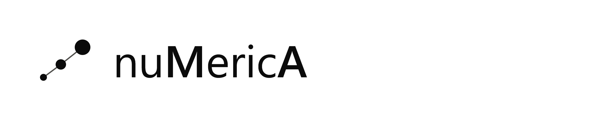

Comprendere il mondo attraverso i dati
Analisi visive, mappe interattive e storie spiegate con i numeri.
📊 Numeri in breve ▾
 SPO·01
SPO·01
Sport: passione vera o moda del momento?
Dalle vittorie di Sinner al boom del padel: quanto è passione e quanto è moda del momento? Confrontiamo dati, praticanti e popolarità per capire quanto i fenomeni sportivi influenzino le nostre scelte.
Esplora i Dati → ECO·01
ECO·01
Il costo nascosto della vita
Dieci città europee a confronto attraverso la metrica che conta davvero: non gli euro, ma le ore di vita necessarie per sostenere il costo della vita.
Esplora i Dati → ENE·01
ENE·01
La Corsa alle Rinnovabili
Un'analisi globale su 79 paesi: chi guida davvero la transizione energetica, da cosa dipendiamo ancora e quanto conta essere ricchi quando si parla di energia.
Esplora i Dati → LAV·01
LAV·01
AI Job Market 2026
Tre fonti a confronto per capire quali ruoli, competenze e stipendi stanno definendo davvero il mercato del lavoro nell'intelligenza artificiale.
Esplora i Dati →Vota il prossimo macro-argomento da approfondire 👇
Scegli quello che ti interessa di più: il prossimo approfondimento potrebbe partire proprio dalla tua curiosità
Un voto per persona.